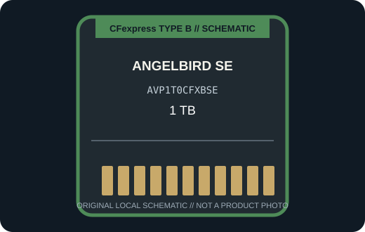

[ REMOVABLE MEDIA // PRODUCT RECORD ]
Angelbird AV PRO SE CFexpress B 1 TB (AVP1T0CFXBSE)
Angelbird’s 1 TB AV PRO SE CFexpress B card, identified by SKU AVP1T0CFXBSE, is cataloged separately from the existing 512 GB SE listing. This entry describes the removable card only; the camera or reader is separate.

MEDIA ONLY: Angelbird AV PRO SE CFexpress B 1 TB (AVP1T0CFXBSE). Capacity, interface generation, and compatibility refer to this model and not other cards in the same family.
Capacity, interface and compatibility
| Manufacturer model | AVP1T0CFXBSE; CFexpress Type B, AV PRO SE |
|---|---|
| Nominal capacity | 1 TB. Usable space varies with formatting and system-reserved capacity. |
| Interface | CFexpress Type B v4; verify PCIe generation and performance mode with the host and exact card revision. |
| Performance | The 1 TB SE card is a standalone media SKU. Angelbird’s current product entry identifies this variant as CFexpress v4 Type B; peak throughput depends on the host reader/camera and firmware. |
| Host compatibility | A CFexpress Type B host explicitly validated for this card revision; a Type B slot from an older camera may operate at a lower rate or may not be supported. Confirm Angelbird’s compatibility guidance before recording. |
| Write protection | No physical card-level write-protect switch is specified for this model; use host controls and verified backups. |
| Model-specific note | Angelbird’s product page labels the current 1 TB SE variant CFexpress v4 Type B. Check exact model/revision markings rather than assuming the existing 512 GB SE card and this 1 TB version share every performance specification. |
Handling and preservation
No finite shelf-life or archival-life guarantee is claimed here. Keep the card clean, dry, labeled, and in its protective case; avoid touching contacts and never remove it during a write. After use, verify files and maintain multiple checksummed copies on independent media. Before a migration or recovery, record the exact card SKU, camera/reader, firmware, filesystem, and host.
Sources and standards
- Angelbird — AV PRO SE CFexpress B 1 TBManufacturer product information for the named series or exact model; confirm SKU and host notes.
- Angelbird — CFexpress Type B capacities and workflow notesAdditional manufacturer detail for this model or product generation.
- CompactFlash Association — CFexpress card typesStandards reference for card form factors; not a substitute for device-specific compatibility.
- Library of Congress — Digital preservation formatsIndependent preservation planning reference for removable digital media.
Manufacturer data apply to the specific product generation shown. Standards define the format family; the camera and reader manuals govern host compatibility.